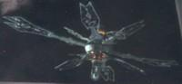

|
|
Stazione spaziale nacene |
|
||||
|  |
Gigantesca struttura che nel 2371 cattura la
Voyager e una nave
di Maquis, catapultandole nel quadrante Delta. I sensori di una nave
federale di classe Intrepid non riescono ad analizzarla.
La struttura, comandata dal Custode, invia degli impulsi
energetici verso Ocampa per fornirgli energia.
Viene distrutta da due missili al
tricobalto lanciati dalla
Voyager, per
impedire ai
Kazon di impossessarsi della
struttura quando il Custode muore.